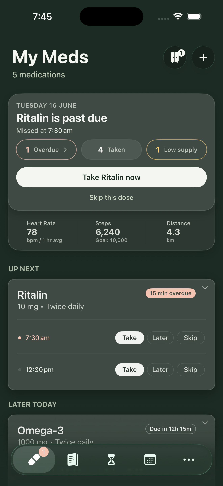

Clearer than a normal reminder app
Generic reminders can tell you when to act, but they often do not help you confirm whether you actually did.
See what a better reminder app should doPillr
Pillr helps you remember medication, log doses, track focus windows, and keep a clear record on iPhone without adding more mental clutter.
Free to start on iPhone

Pillr is strongest when the problem is not just getting a reminder. It is knowing what happened, trusting the record, and keeping your routine steady when life gets messy.
Generic reminders can tell you when to act, but they often do not help you confirm whether you actually did.
See what a better reminder app should doPillr combines reminders, quick dose logging, focus windows, refill tracking, and exports in one calm flow.
Read the iPhone guideApple Health is useful for basic tracking. Pillr goes further if you want faster logging, clearer routines, and ADHD-specific features.
Compare Apple Health and PillrAll your meds — scheduled, as needed, or one-off — in a single view the moment you open the app. No more scattered alarms, sticky notes, or trying to remember which app you used last time. Just one place that shows you exactly where things are.
A visual timeline that shows when your medication kicks in, hits its peak, and starts to fade — based on your own onset and duration settings, not a generic average. Schedule your hardest tasks when you’re sharpest, and stop fighting yourself when you’re not.
A short end-of-day check-in where you log focus, mood, and any side effects. Over a few weeks, it builds a real picture of how your medication is actually affecting you — so you have something concrete to show your psychiatrist, not just a feeling.
Export your full medication history as a PDF or CSV, filtered by date if you need it. Instead of walking into a medication review trying to remember the last three months, you show up with an actual record.
Real stories from adults managing ADHD medication with Pillr.
I've tried every reminder app out there and they all just... blended into the noise. Pillr is the first one that actually stuck. The check-in streak thing sounds small but honestly it's changed my whole morning. I haven't missed a dose in 11 weeks.
My psychiatrist actually asked me to start tracking when my meds kick in and wear off. Pillr made that so easy, I just log how I'm feeling at different points and it builds this timeline. Brought it to my last appointment and we adjusted my timing based on it. That's huge.
As someone who takes two different meds at different times, keeping track was a mess. I used to second-guess myself constantly, did I take it or just think about taking it? Pillr basically eliminated that anxiety. The log is right there, no guessing.
I got this for my teenage son and honestly it's helped our whole household relax. He feels independent managing it himself, I get a bit of peace of mind, and there's way less "did you take your meds?" every morning. The design doesn't feel clinical either, which matters for a 16-year-old.
Your go-to collection of guides on ADHD diagnosis, medication, daily management, and everything in between.
A simple look at the signs adults often notice first and what to do next.
Read guideA daily guide to reminders, logging, missed doses, notes, and refill planning.
Read guideWhat to look for in a reminder app, and why clear tracking matters as much as alerts.
Read guideNo. Pillr helps you track and organise medications, but it does not replace a clinician. Always follow your prescriber's advice.
Yes. Pillr supports all common ADHD stimulants and non-stimulants — Vyvanse, Adderall, Adderall XR, Concerta, Ritalin, Strattera, Guanfacine, and anything else you're taking.
Yes. Pillr supports any medications, with special focus window timing tools built specifically for ADHD stimulants.
Your data stays on your device by default. No account required and nothing is sent to a server.
Yes. Export your full ADHD medication history as CSV or PDF to share with your psychiatrist, GP, or caregiver.
Pillr shows a visual timeline of when your ADHD medication is likely to be active — from onset through peak effect to wear-off. Use it to plan your hardest tasks when you're sharpest.
Yes. Pillr combines pill tracker features with flexible reminders so you always know when to take, skip, or snooze a dose — and keeps a full log you can look back on.
Yes. Pillr tracks adherence rates, streaks, and refill status, making it easy to share proof of consistency with clinicians or caregivers.
Pillr makes it a little less so. Whether you're just starting treatment or have been at it for years, it helps you stay consistent without adding more to remember.